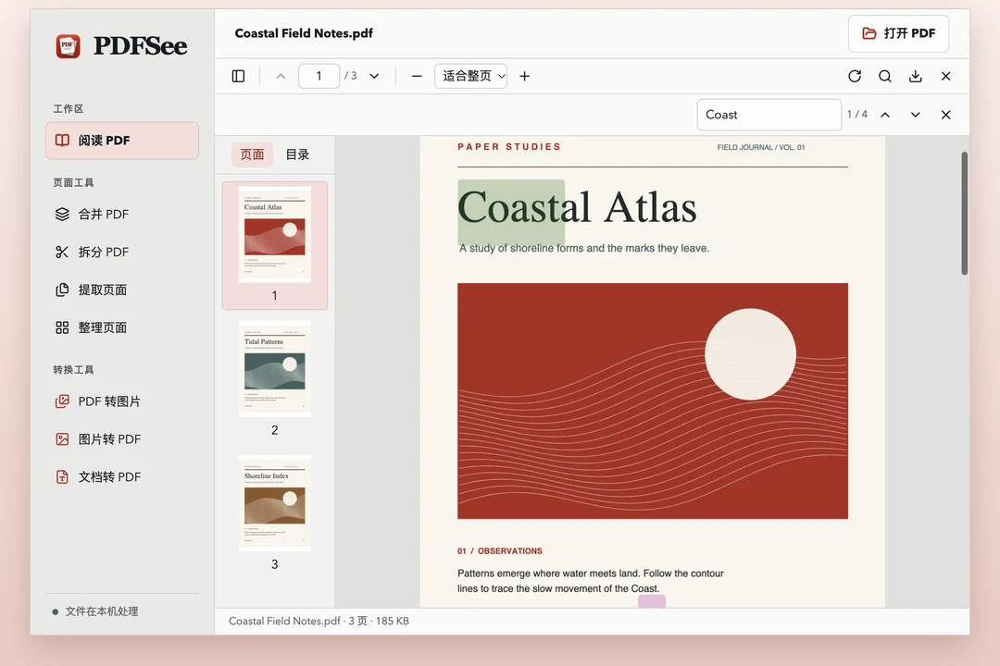
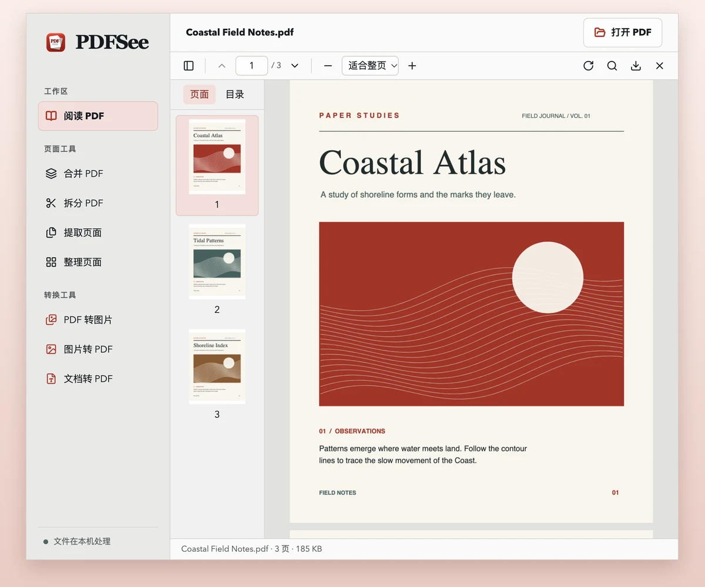
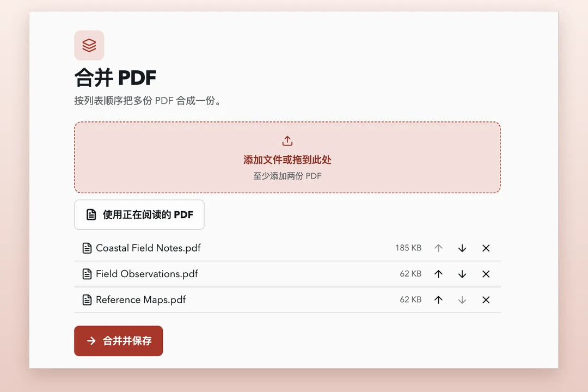
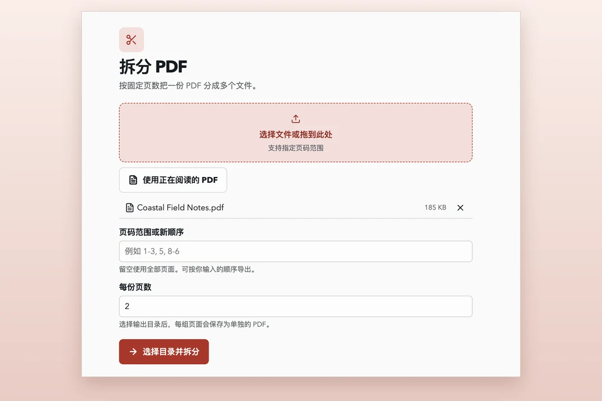
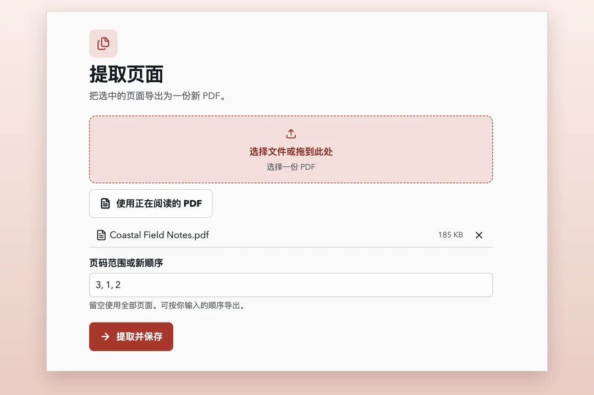
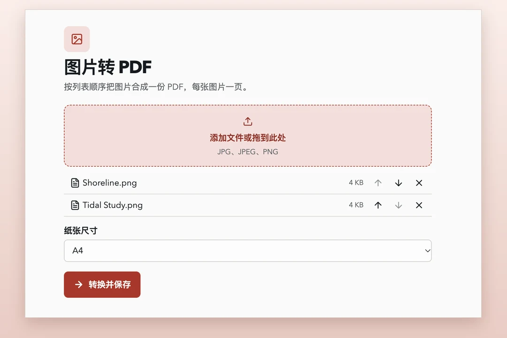

01
阅读 PDF 搜索与复制
选择或拖入本地 PDF 文件，查看缩略图和目录结构。搜索文字、复制内容，支持跳页、缩放、旋转视图，或将当前页导出为 PNG。加密 PDF 可输入密码打开。

本地处理，文档留在本机。轻量、跨平台的 PDF 工具，支持阅读、合并、拆分、提取页面和格式转换。无需注册，打开即用。

选择或拖入本地 PDF 文件，查看缩略图和目录结构。搜索文字、复制内容，支持跳页、缩放、旋转视图，或将当前页导出为 PNG。加密 PDF 可输入密码打开。

添加多份 PDF 文件，拖动调整顺序，一键导出为合并后的新文件。整理合同、报告或学习资料，无需在线服务。

设置每份文件的页数，将长文档拆分为多个小文件。支持指定页码范围，输出到所选目录下的新文件夹。

输入 1-3, 5, 8-6 可选择正序和倒序范围，输入 3,1,2 可以重排页面。省略页码可删除相应页面，还能旋转导出的页面。

将 JPG、PNG 按指定顺序转换为 PDF，支持按图片尺寸、A4 或 Letter 生成各页。Word、Excel、PowerPoint 等文档也可转换为 PDF，需要本机安装 LibreOffice。

文档转 PDF 需要本机安装 LibreOffice，排版效果取决于 LibreOffice 和本机字体。